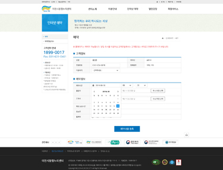

함께하는 우리 하나되는 세상
항상 사랑과 행복을 싣고
언제나 여러분의 날개가 되어드리겠습니다!
인터넷예약이용안내
인터넷 예약 이용 순서
-
Step 01. 이천시동행누리센터 홈페이지 접속
홈페이지에 접속하여 심사신청서를 다운받으신 후 작성하여
가입신청하시면, 이후 승인처리된 후에 예약신청이 가능합니다. -
Step 02. 회원가입
회원가입으로 와서 이용약관 및
개인정보취급방침에 동의 후 회원가입 신청서를 작성합니다. -
Step 03. 로그인
회원가입 등록 후 승인처리가 되면,
회원아이디와 비밀번호를 입력하고 로그인 버튼을 클릭합니다. -
Step 04. 인터넷 예약
로그인 후 인터넷예약으로 들어와 예약/취소를 작성합니다.
-
Step 05. 고객정보 입력
고객정보의 전화번호와 이용목적을 입력합니다.
출발지와 도착지를 입력하면 예상 소요시간 등 예약정보와
관련된 정보를 한 눈에 보실 수 있습니다. -
Step 06. 예약정보 입력
예약시간과 왕복시간의 박스를 클릭하면 달력에서 날짜를 선택합니다.
예약정보의 하단에는 예약 가능한 운영시간이 표시됩니다. -
Step 07. 예약현황 및 취소 확인
날짜 검색조건으로 예약현황의 목록을 볼수있으며,
배차가 되지않은 예약은 취소버튼을 눌러 배차를 취소할 수 있습니다.